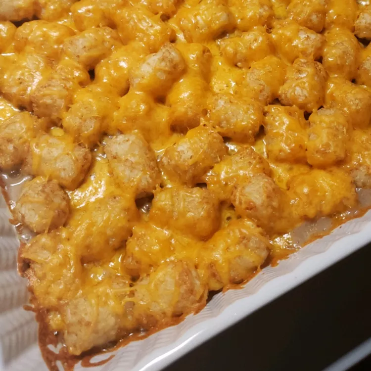

Casserole

Description
This Tater Tot casserole is a quick and easy dinner that everyone will love. Just four basic ingredients come together for this comforting dish.
Ingredients
- Ground beef
- Condensed cream of mushroom soup
- Salt and black pepper
- Frozen tater tots
- Shredded Cheddar cheese
Steps
- Preheat oven
- Make food
- Put in oven